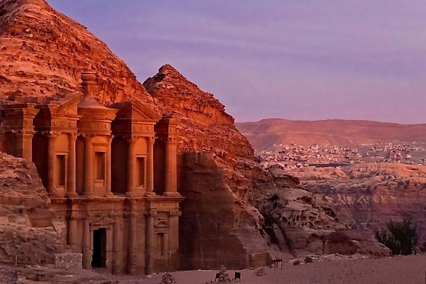
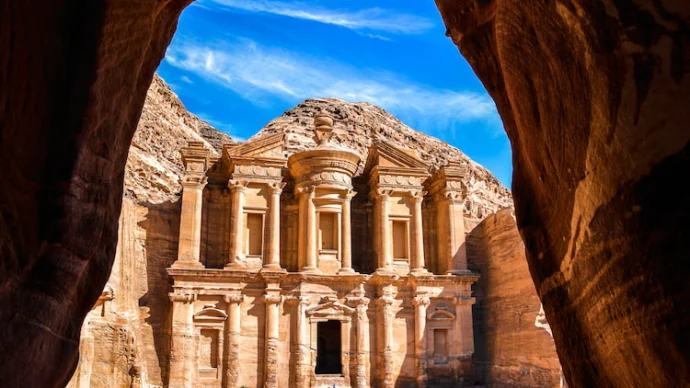
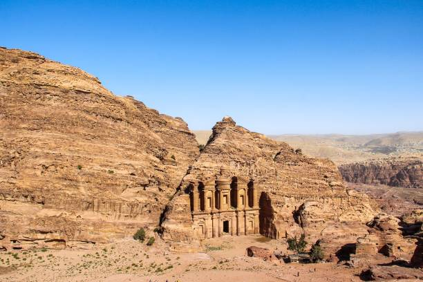

Petra
Ma'an Governorate, Jordan
Petra, Jordan, is an ancient city whose buildings are carved into pink, red, and white sandstone cliffs. It is one of the oldest existing cities in the world and stretches over 100 square miles (259 square kilometers). The Nabateans founded it in approximately the fourth century, chiseling temples, dwellings, and tombs in the stone. The Nabateans also had very advanced infrastructure, creating an impressive irrigation system of dams, canals, and reservoirs that provided water for over 30,000 participants in the otherwise arid zone. Some remnants of this irrigation system are still visible today. Visitors may recognize the ancient city from Indiana Jones and The Last Crusade, which filmed several scenes there. Petra became a UNESCO World Heritage site in 1985, and currently, around 900,000 people visit it annually.
Key Facts
Built: 4th century BC
Location: Ma'an Governorate, Jordan
Built By: Nabataean Kingdom
Purpose: Capital City and Trade Hub
Gallery




